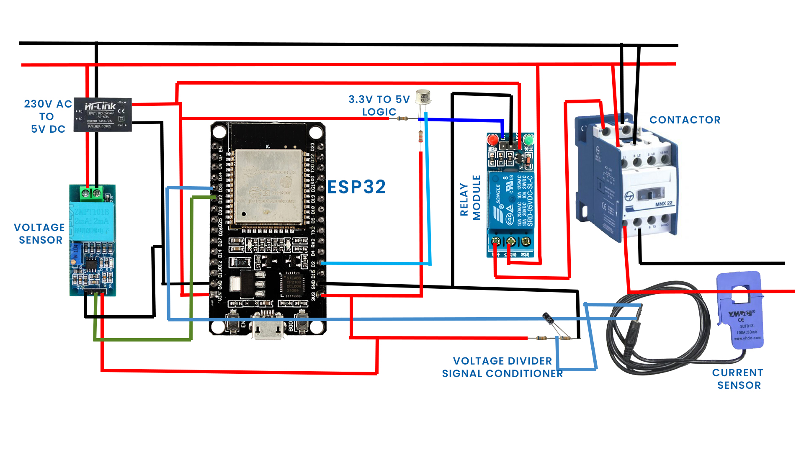
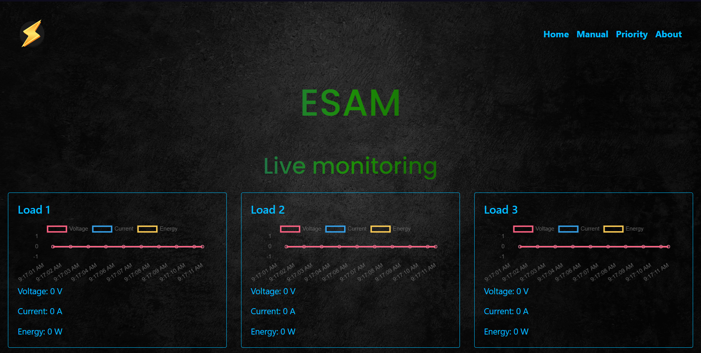
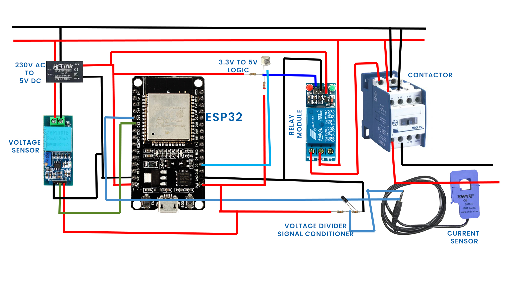
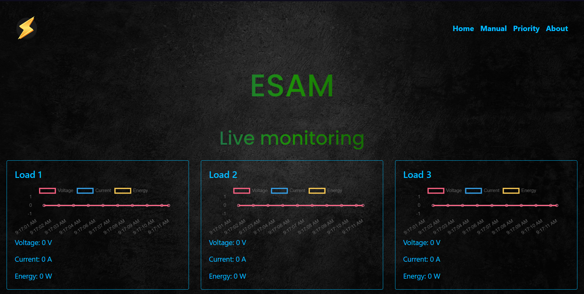
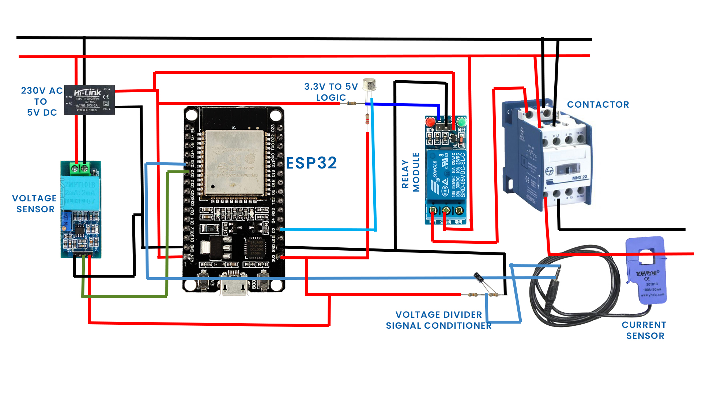
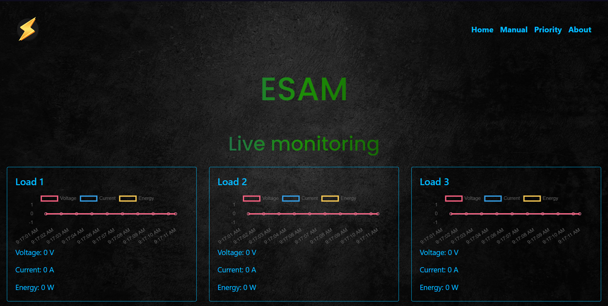
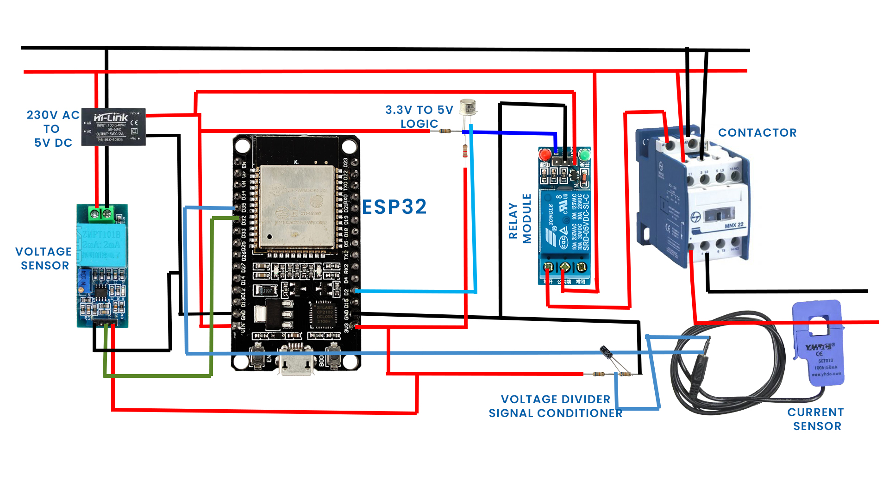
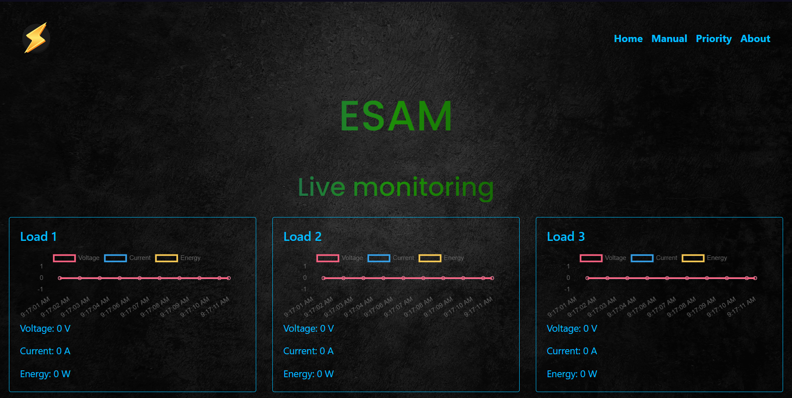

Economic Sensing & Automation For Micro Grids(ESAM) brings out modern technology to the existing microgrids. The Internet of Things(IoT) refers to an interconnected network of physical devices, vehicles, buildings, and other objects that are embedded with sensors, software, and network connectivity, allowing them to collect and exchange data. The IoT allows for the automation and control of these connected devices, enabling them to communicate and interact with each other and with humans in a coordinated and intelligent manner. The IoT has the potential to transform a wide range of industries and applications, including manufacturing, transportation, agriculture, healthcare, and energy. We use IoT in microgrids to monitor the power specifications(Load, Voltage variations, Energy usage, etc..) and control the load to get more efficient and dynamic power distribution. The system is designed in a modular method that can be installed in any existing grid without affecting current systems. Complete control and monitoring are enabled through a web user interface that gives the user complete authority to control the functioning and gives a detailed analysis of the system.